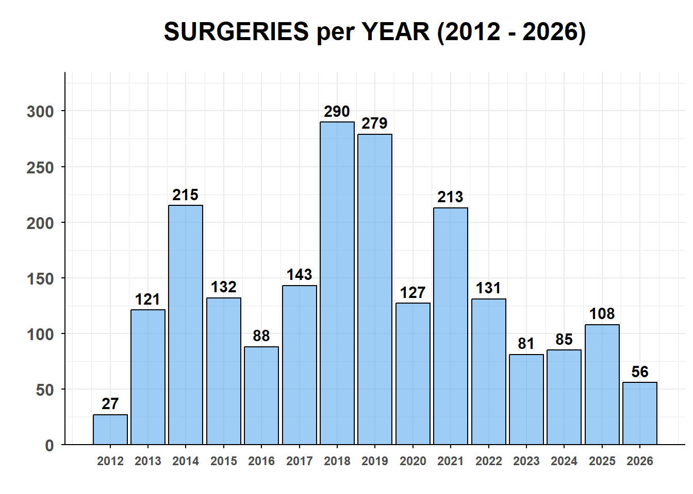
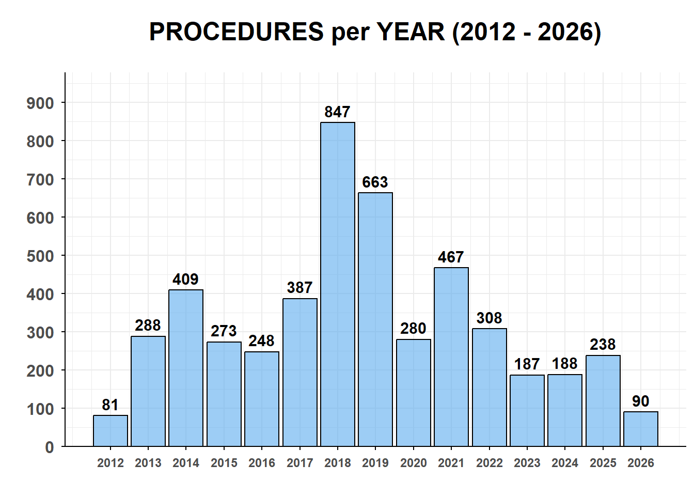
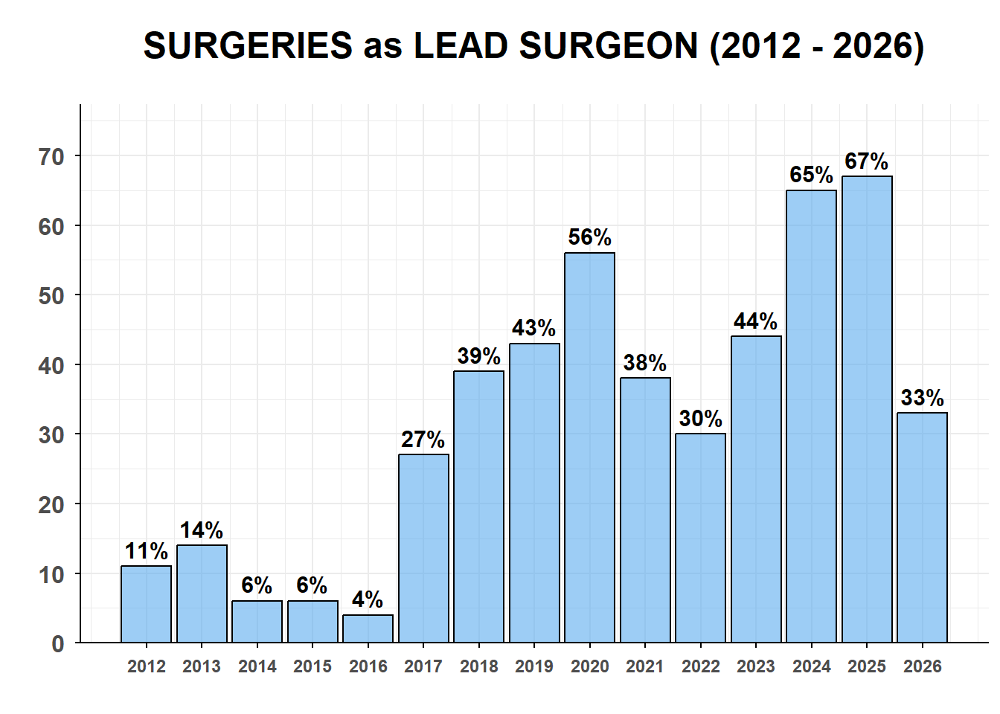
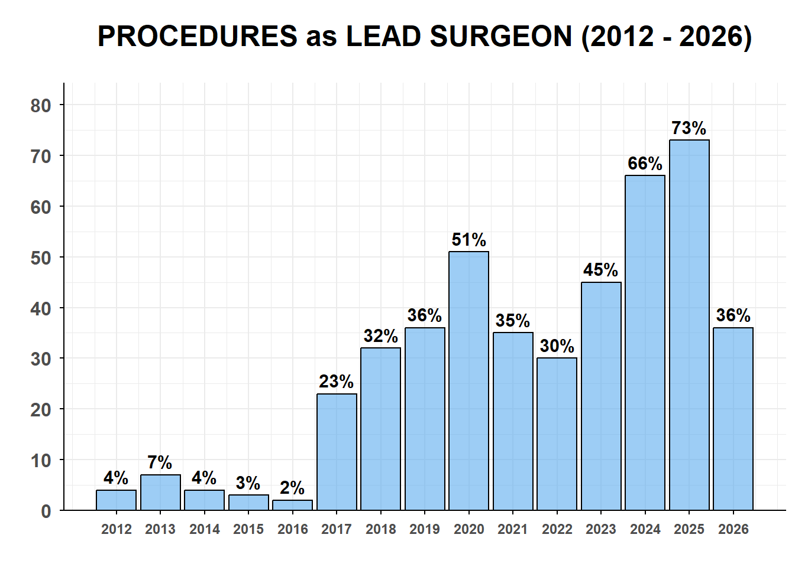
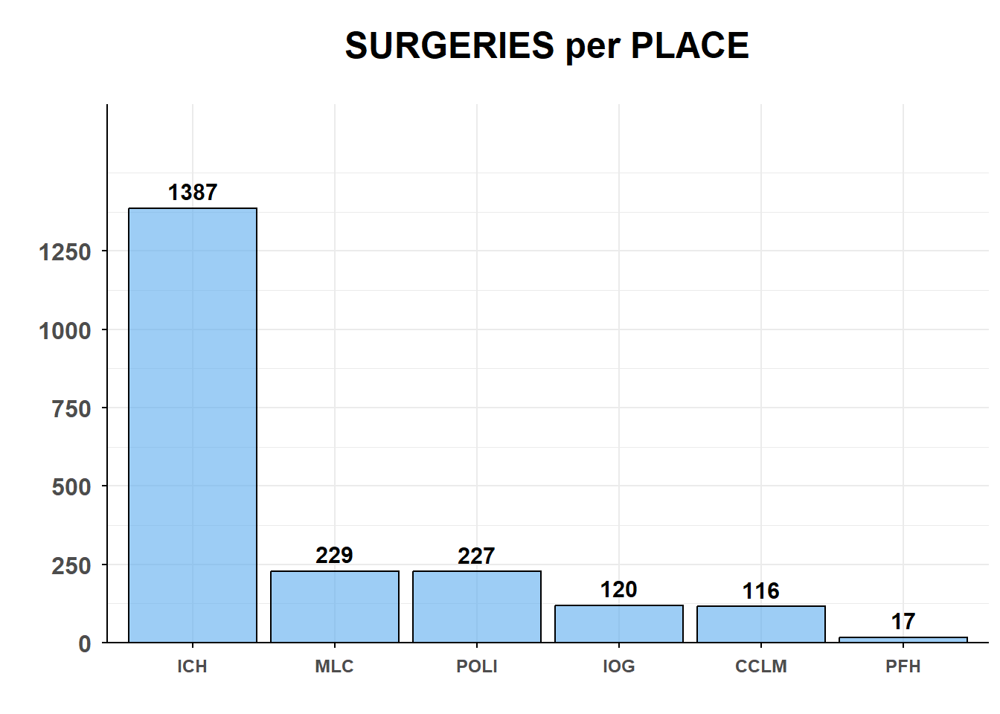
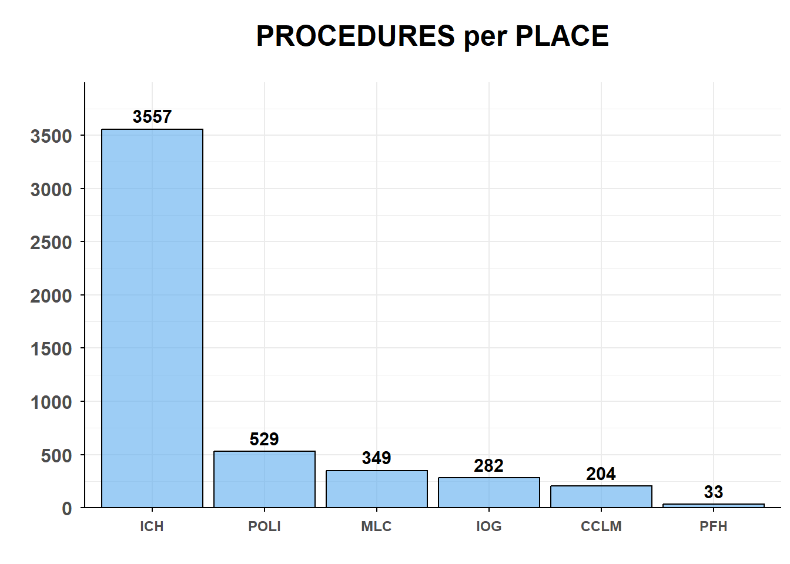
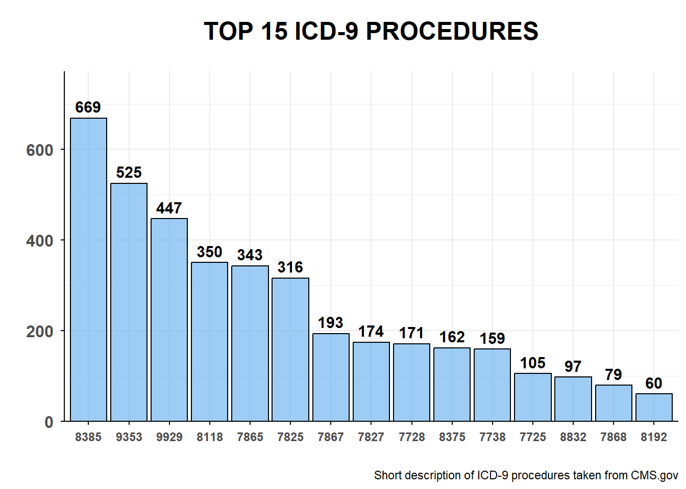

| Year | Surgeries | Surgeries (running) | Surgeries (delta) | Procedures | Procedures (running) | Procedures (delta) |
|---|---|---|---|---|---|---|
| 2012 | 27 | 27 | --- | 81 | 81 | --- |
| 2013 | 121 | 148 | 348.15% | 288 | 369 | 255.56% |
| 2014 | 215 | 363 | 77.69% | 409 | 778 | 42.01% |
| 2015 | 132 | 495 | -38.60% | 273 | 1051 | -33.25% |
| 2016 | 88 | 583 | -33.33% | 248 | 1299 | -9.16% |
| 2017 | 143 | 726 | 62.50% | 387 | 1686 | 56.05% |
| 2018 | 290 | 1016 | 102.80% | 847 | 2533 | 118.86% |
| 2019 | 279 | 1295 | -3.79% | 663 | 3196 | -21.72% |
| 2020 | 127 | 1422 | -54.48% | 280 | 3476 | -57.77% |
| 2021 | 213 | 1635 | 67.72% | 467 | 3943 | 66.79% |
| 2022 | 131 | 1766 | -38.50% | 308 | 4251 | -34.05% |
| 2023 | 81 | 1847 | -38.17% | 187 | 4438 | -39.29% |
| 2024 | 85 | 1932 | 4.94% | 188 | 4626 | 0.53% |
| 2025 | 108 | 2040 | 27.06% | 238 | 4864 | 26.60% |
| 2026 | 56 | 2096 | -48.15% | 90 | 4954 | -62.18% |
- PERSONAL SURGICAL ANALYSIS -
📈 SURGERIES and PROCEDURES per YEAR
📌 The following charts illustrate the overall volume of surgeries and procedures performed annually, highlighting the yearly distribution and productivity trends across the analyzed timeframe.


📈 SURGERIES and PROCEDURES as LEAD SURGEON
📌 The following charts break down the proportion of surgeries and procedures performed specifically as the lead surgeon each year, reflecting the evolution of primary surgical responsibilities over time (excluding total summary metrics).
| Year | Surgeries | Surgeries as lead (n) | Surgeries as lead (%) | Procedures | Procedures as lead (n) | Procedures as lead (%) |
|---|---|---|---|---|---|---|
| 2012 | 27 | 3 | 11.11% | 81 | 4 | 4.94% |
| 2013 | 121 | 17 | 14.05% | 288 | 23 | 7.99% |
| 2014 | 215 | 14 | 6.51% | 409 | 18 | 4.40% |
| 2015 | 132 | 8 | 6.06% | 273 | 10 | 3.66% |
| 2016 | 88 | 4 | 4.55% | 248 | 5 | 2.02% |
| 2017 | 143 | 40 | 27.97% | 387 | 90 | 23.26% |
| 2018 | 290 | 114 | 39.31% | 847 | 278 | 32.82% |
| 2019 | 279 | 121 | 43.37% | 663 | 240 | 36.20% |
| 2020 | 127 | 72 | 56.69% | 280 | 145 | 51.79% |
| 2021 | 213 | 83 | 38.97% | 467 | 166 | 35.55% |
| 2022 | 131 | 40 | 30.53% | 308 | 95 | 30.84% |
| 2023 | 81 | 36 | 44.44% | 187 | 85 | 45.45% |
| 2024 | 85 | 56 | 65.88% | 188 | 125 | 66.49% |
| 2025 | 108 | 73 | 67.59% | 238 | 175 | 73.53% |
| 2026 | 56 | 19 | 33.93% | 90 | 33 | 36.67% |
| TOTAL | 2096 | 700 | --- | 4954 | 1492 | --- |


📈 PROCEDURES per PLACE
📌 The following chart illustrates the distribution of surgeries and procedures performed across different hospitals1, highlighting the comparative volume and activity levels per medical facility.
| Place | Surgeries (n) | Surgeries (%) | Procedures (n) | Procedures (%) |
|---|---|---|---|---|
| ICH | 1387 | 66.17% | 3557 | 71.80% |
| MLC | 229 | 10.93% | 349 | 7.04% |
| POLI | 227 | 10.83% | 529 | 10.68% |
| IOG | 120 | 5.73% | 282 | 5.69% |
| CCLM | 116 | 5.53% | 204 | 4.12% |
| PFH | 17 | 0.81% | 33 | 0.67% |
| TOTAL | 2096 | 100.00% | 4954 | 100.00% |


📈 TOP 15 PROCEDURES
📌 The following chart presents the 15 most frequently performed surgical procedures, highlighting the primary clinical interventions and their relative distribution over the analyzed period.
| Procedure | n | % | Short description |
|---|---|---|---|
| 8385 | 669 | 13.50% | Other change in muscle or tendon length |
| 9353 | 525 | 10.60% | Application of other cast |
| 9929 | 447 | 9.02% | Injection or infusion of other therapeutic or prophylactic substance |
| 8118 | 350 | 7.06% | Subtalar joint arthroereisis |
| 7865 | 343 | 6.92% | Removal of implanted devices from bone, femur |
| 7825 | 316 | 6.38% | Limb shortening procedures, femur |
| 7867 | 193 | 3.90% | Removal of implanted devices from bone, tibia and fibula |
| 7827 | 174 | 3.51% | Limb shortening procedures, tibia and fibula |
| 7728 | 171 | 3.45% | Wedge osteotomy, tarsals and metatarsals |
| 8375 | 162 | 3.27% | Tendon transfer or transplantation |
| 7738 | 159 | 3.21% | Other division of bone, tarsals and metatarsals |
| 7725 | 105 | 2.12% | Wedge osteotomy, femur |
| 8832 | 97 | 1.96% | Contrast arthrogram |
| 7868 | 79 | 1.59% | Removal of implanted devices from bone, tarsals and metatarsals |
| 8192 | 60 | 1.21% | Injection of therapeutic substance into joint or ligament |

Footnotes
CCLM = “La Madonnina” clinic, Milano | ICH = “Istituto Clinico Humanitas” - “Humanitas Ressearch Hospital”, Rozzano (MI) | IOG = “Istituto Ortopedico Galeazzi”, Milano | MLC = “Alessandro Manzoni” Hospital, Lecco | PFH = “Piccole Figlie Hospital”, Parma | POLI = “Fondazione IRCCS Ca’ Granda - Ospedale Maggiore Policlinico”, Milano↩︎